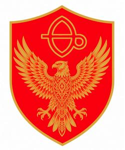

Згурская Республика — ЧЕРНОВИК

{kind=link}

Згурская Республика (згур. и дегл. Zgurska Republyka, глаг. ⰈⰃⰖⰓⰔⰍⰀ ⰓⰅⰒⰖⰁⰎⰬⰍⰀ, сокращённо ЗР) — одно из двух фактически существующих непризнанных государств Бывшей Верхней Паннонии. ЗР как политическая единица сформировалась в ходе верхнепаннонской гражданской войны в 1992-1993 годах и была официально провозглашена 29 ноября 1994 года. Государство не поддерживает формальных дипломатических отношений ни с какими другими странами, фигурирует в международных документах как «Згурская зона» и официально контактирует с внешним миром только через Наблюдательную миссию ООН по Бывшей Верхней Паннонии. Дипломатическому признанию препятствует отсутствие мирного соглашения со второй стороной конфликта — Деглянской Республикой; хотя боевые действия между ними прекратились в 1995 году после подписания Лозаннских соглашений, спорные вопросы до сих пор не урегулированы, и позиции сторон по-прежнему несовместимы.
Исторический очерк
После убийства королевы Людмилы 17 сентября 1994 года и срыва перемирия исчезла всякая надежда на восстановление единого паннонского государства. На фоне возобновившейся войны в ноябре 1994 года в Северной Вроновице собрался съезд згурских депутатов, объявил себя Законодательным Собранием и 29 ноября провозгласил независимость Згурской Республики. Лозаннские соглашения 1995 года были заключены между представителями Згурской и Деглянской республик как независимых государств, хотя дипломатически они друг друга не признавали. 14 января 1996 года згурские граждане голосовали на референдуме о Конституции ЗР; она была принята большинством в 68% голосов и продолжает действовать по сей день, хотя с многочисленными поправками.
В первые послевоенные годы сохранялось влияние авторитетных полевых командиров, которые, формально распустив свои армии, всё ещё обладали массой вооружённых сторонников и не стеснялись навязывать силой свою политическую волю. Обычным делом были вооружённые разборки, политические убийства и похищения, силовые захваты государственных органов. Но война уходила в прошлое, в обществе рос спрос на нормализацию, и гражданская бюрократия постепенно набирала влияние, перехватывая финансовые потоки и выстраивая послушные ей силовые структуры. В 1997-1999 годах несколько ярких полевых командиров пали жертвами нераскрытых убийств (оффициально списанных на "деглянских террористов"), а командиры менее яркие всё поняли и постарались вписаться в новый порядок. Згурская Республика декларировала сотрудничество с Международным трибуналом по Бывшей Верхей Паннонии в Гааге и выдала ему несколько военных преступников среднего звена, а один из высших полевых командиров - генерал -
Государственное устройство и политика
Парламент
Согласно Конституции 1996 года, ЗР — унитарная парламентская республика. Однопалатный парламент — Згурское Законодательное Собрание (Zgursko Zakonodarno Zgromadjenne) — состоит из 64 депутатов. Выборы проходят раз в пять лет, обычно в октябре. Ныне действующий (на сентябрь 2026 года) состав парламента 6-го созыва был избран в октябре 2022 года: выборы должны были состояться годом раньше, но были перенесены из-за пандемии COVID-19. Конкретные параметры избирательной системы меняются от кампании к кампании, как и границы округов, нарезаемых произвольно к выгоде правящей партии — Згурского демократического союза (Zgurski demokratycki suvowz, ЗДС). В настоящее время действует Закон о выборах 2022 года: страна разбита на 64 округа, каждый из которых посылает одного депутата, избираемого строго из партийного списка; самовыдвижение не допускается. Единый национальный список отсутствует, что выгодно правящей партии, которая в данный момент не имеет всенародно популярных лидеров, но обладает прочными позициями на местах. В текущем составе Законодательного Собрания ЗДС имеет 45 мандатов (70%).
Президент
Президент избирается парламентом сроком на 8 лет из кандидатов, выдвинутых фракциями. Второй срок не допускается. Президент является формальным главой государства и верховным главнокомандующим, но не имеет реальных властных полномочий, за исключением ситуации, когда парламент в течение трёх месяцев не может сформировать правительство. В этом случае президент может единолично назначить премьера, который затем сформирует кабинет, либо распустить парламент и назначить новые выборы. Такой кризис в истории ЗР происходил один раз, после скандальных выборов 2011 года, когда под давлением уличных протестов пришлось пересчитать голоса, и ЗДС лишился большинства. В настоящее время президентский пост занимает Алоис Хрожицкий, избранный пятым главой ЗР в 2025 году.
Премьер-министр и кабинет
Новоизбранный парламент выбирает премьер-министра, как правило, лидера фракции большинства. Премьер затем формирует кабинет министров и утверждает его в парламенте единым списком. Премьер обладает огромным объёмом полномочий и является фактическим главой государства. Ограничений по срокам у него нет. Парламентский контроль над правительством минимален, объявить недоверие премьеру или кабинету технически весьма сложно; и напротив, премьер как лидер большинства обладает значительным контролем над парламентом, как правило, легко проводя через него любые нужные ему законы. Это позволяет политологам называть ЗР скорее суперпремьерской, чем парламентской республикой, со многими признаками авторитарного режима.
Такая система сложилась не сразу. Первый премьер-министр Милан Ежек (1996-2001) был довольно слабой фигурой, зависимой от парламента. Власть постепенно консолидировал лишь второй премьер Радко Бартолов (2001-2012) путём всевозможных интриг, манипуляций законодательством и откровенной коррупции. Вынужденный уйти после протестов зимы 2011-2012 годов, он уступил власть «техническому» премьеру Злотану Скруту, который поначалу был послушной марионеткой, но с годами набрал политический вес и добился самостоятельности. В настоящее время Скрут уже третий срок занимает должность премьера, является неоспоримым лидером ЗДС и прочно удерживает в руках рычаги власти, оттеснив ставленников Бартолова (умершего в 2024 году).
Партии
В стране существуют десятки политических партий, но у власти с 1996 года почти бессменно стоит ЗДС, чьё влияние несопоставимо с влиянием любой другой партии. Поэтому партийную систему ЗР часто характеризуют как полуторапартийную или даже 110%-партийную. Монополия ЗДС была поколеблена только в 2012-2016 годах, когда ей пришлось вступить в коалицию с социалистами.
Згурский демократический союз образовался в 1992 году в результате слияния нескольких национал-либеральных и умеренно националистических партий. Ведущую роль в этом альянсе играла бывшая Паннонская партия демократического обновления во главе с Любодаром Влошеком. Влошек, избранный в 1996 году первым президентом республики, наполнил партию своими многочисленными родственниками, которые впоследствии заняли высокие посты в государстве. Так, бывший премьер Бартолов был племянником Любодара, а нынешний премьер Скрут — сын его двоюродной сестры; родной сын Любодара Рощислав ныне занимает пост министра иностранных дел; другой его племянник Адам уже четверть века служит мэром Вроновицы. В ответ на обвинения в непотизме представители клана Влошеков неизменно ссылаются на «генетическую предрасположенность» и «наследственный талант к государственной службе».
ЗДС позиционирует себя как правоцентристскую проевропейскую партию. Слева ей оппонирует Згурская социалистическая партия (Zgurska socialystycka partya, ЗСП), один из осколков Коммунистической партии Верхней Паннонии, а справа — националистическая «Наша страна» (Nasz kraj, НК). Эти две партии обычно проходят в парламент, выигрывая отдельные округа благодаря популярным местным лидерам или по негласному сговору с ЗДС. Другие партии, такие как Зелёные (Zeleny) и леволиберальная «Молодая Згурия» (Mloda Zguria), обычно не представлены на национальном уровне, но имеют мандаты в органах местного самоуправления. Все эти оппозиционные партии склонны к семейственности ничуть не меньше ЗДС; передача лидерства по наследству — обычное дело.
Судебная власть
По Конституции 1996 года, суд формально независим, судьи назначаются пожизненно тайным голосованием судейских коллегий. Фактически назначение и отстранение судей контролируется Министерством юстиции через процедуры «квалификации» и «дисквалификации». Судьи, слишком независимые в своих решениях, недолго задерживаются на посту, а в процессах с высокими политическими или экономическими ставками решения, как правило, закулисно диктует правительство.
Региональное и местное управление
Страна делится на девять уездов и столицу Вроновицу (фактически включающую только Третий и Четвёртый округа). Уездом управляет глава, назначаемый премьер-министром. Уезды делятся на муниципалитеты (города) и сельские округа. Эти территориальные единицы, в отличие от уездов, имеют выборные органы самоуправления в форме городских или сельских советов. Во Вроновице тоже есть выборный городской совет, а также мэр, избираемый всеобщим голосованием.
[RU2EN]### Роль Миссии ООН
[RU2EN]Стороны Лозаннских соглашений обязались избегать насильственного решения конфликтов и соблюдать права человека, а Наблюдательная миссия ООН (ЮНОМФУП) получила право следить за выполнением этих обязательств. В рамках этих соглашений наблюдатели ЮНОМФУП присутствуют во всех государственных органах ЗР, собирают информацию, публикуют отчёты, но не вмешиваются в работу государственного аппарата напрямую. Официально у ЮНОМФУП нет властных полномочий на згурской территории. Однако её фактическое влияние как оператора международной финансовой помощи и посредника во всех внешних сношениях весьма велико, и, по слухам, ни одно важное политическое решение не принимается згурским правительством без "консультаций" с Нейтральной зоной.
(продолжение следует)